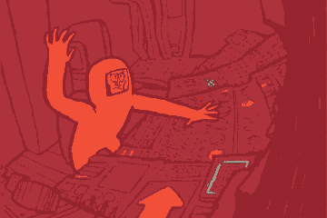

CTYPE html PUBLIC "-//W3C//DTD HTML 4.01 Transitional//EN">
<html>
<head>
    <meta http-equiv="content-type" content="text/html;charset=ISO-8859-1"><title>me irl</title>
    <link rel="shortcut icon" href="favicon.ico">
    <meta HTTP-EQUIV="REFRESH" content="7; url=http://philcryer.com">
<style type="text/css" media="screen"><!--
body
{
color: black;
background-color: #000000;
margin: 0px
}

#horizon
{
color: white;
background-color: transparent;
text-align: center;
position: absolute;
top: 35%;
left: 0px;
width: 100%;
height: 1px;
overflow: visible;
visibility: visible;
display: block
}

#content
{
font-family: Verdana, Geneva, Arial, sans-serif;
background-color: transparent;
margin-left: -125px;
position: absolute;
top: -35px;
left: 45%;
width: 250px;
height: 70px;
visibility: visible
}

.bodytext
{
font-size: 14px
}

.headline
{
font-weight: bold;
font-size: 24px
}

#footer
{
font-size: 11px;
font-family: Verdana, Geneva, Arial, sans-serif;
text-align: center;
position: absolute;
bottom: 0px;
left: 0px;
width: 100%;
height: 20px;
visibility: visible;
display: block
}

a:link, a:visited
{
color: #06f;
text-decoration: none
}

a:hover
{
color: red;
text-decoration: none
}
img.center {
    display: block;
    margin-left: auto;
    margin-right: auto
}
</style>

</head>

<body>
    <div id="horizon">
        <div id="content">
            <div class="bodytext">
              <br>
            </div>
        </div>
    </div>
  <div id="footer">
    <font color="gray"><i>me IRL - don't worry, we're redirecting in 7...</i></font></div>
</body>

</html>


